Artifact-Based Rendering (ABR)
In this tutorial
Part 1: Uploading VisAssets
After this tutorial, you should be able to:
- Define VisAsset
- Log in to the course VisAsset library
- Upload a gradient using the applets
- View gradients in the library
What is a VisAsset?
Visualization Asset (VisAsset):
a visual building
block or element of a visualization
sourced from real-world artifacts
and materials.
What is a VisAsset?
Each panel of your A2 gradients is a VisAsset!
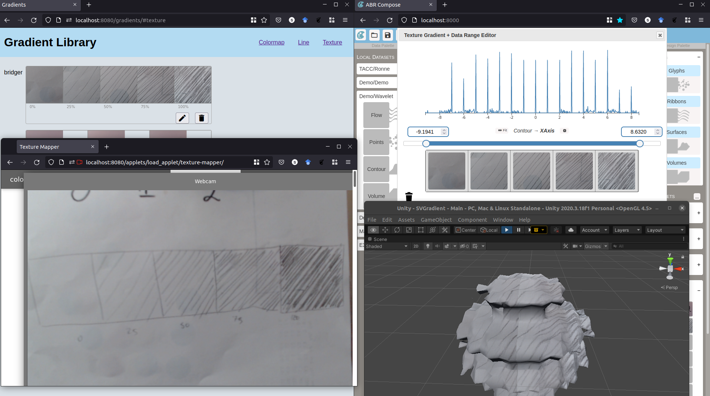VisAsset Library
A place to put VisAssets for safekeeping
How to log into the library
- Go to z.umn.edu/cs5609-library
- Click "Log In"
- Enter the credentials that were emailed to you
sorry, you cannot change them
Uploading a VisAsset
Use the Applets!
- Colormaps: Color Loom
- Lines: Infinite Line
- Textures: Texture Mapper

General process for applets
- Upload / capture image
- Adjust image
-
Upload VisAsset to library
- Internet ID
- Name of gradient
- Percentage through gradient
For gradients with multiple VisAssets (e.g., discrete lines and
textures),
you will need to repeat the upload process for each panel in
the gradient.
Applet Instructions: Color Loom
Press down arrow to see instructions!
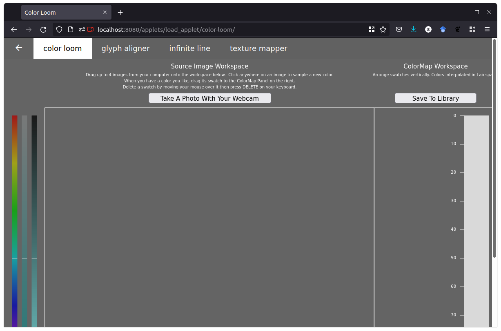Capture an Image
- Take a photo with your webcam, OR
- Drag and drop a photo from your computer
Adjust colors
- Pick additional colors by clicking on the image
- Adjust color swatches using the HSV sliders on the left
Build colormap
- Drag and drop color swatches to the right panel
- Adjust vertically
- Delete clicking and using the 'del' key
Upload to library
Click "Save to Library"
- Family (leave unchanged): your internet ID
- Class: name of your gradient
Name it anything you like, we suggest
gradient1...gradientNto correspond with your physical copy - Tag: leave blank for colormaps, since the VisAsset is the entire colormap
If you see "successfully uploaded", you're done!
Uploading another colormap
Just click "Take a snap with webcam" again!
Applet Instructions: Infinite Line
Press down arrow to see instructions!
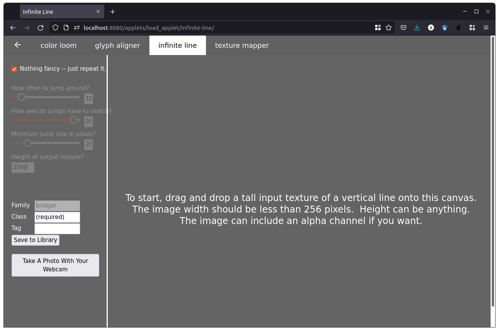Capture an Image
- Take a photo with your webcam
Line up your line with the dotted guides
Use the black/white slider to make sure your line shows up
Use the aspect ratio slider to match your line
- Drag and drop a photo from your computer
Adjust parameters
- If your line matches at the top and bottom nicely, leave it on "just repeat it"
- If not, use the three sliders to adjust how it looks
Upload to library
Click "Save to Library"
- Family (leave unchanged): your internet ID
- Class: name of your gradient
Name it anything you like, we suggest
gradient1...gradientNto correspond with your physical copy - Tag: the percentage through your gradient that you labeled on paper (e.g., 50%)
If you see "successfully uploaded", you're done!
Uploading another line
Just click "Take a snap with webcam" again!
Applet Instructions: Texture Mapper
Press down arrow to see instructions!
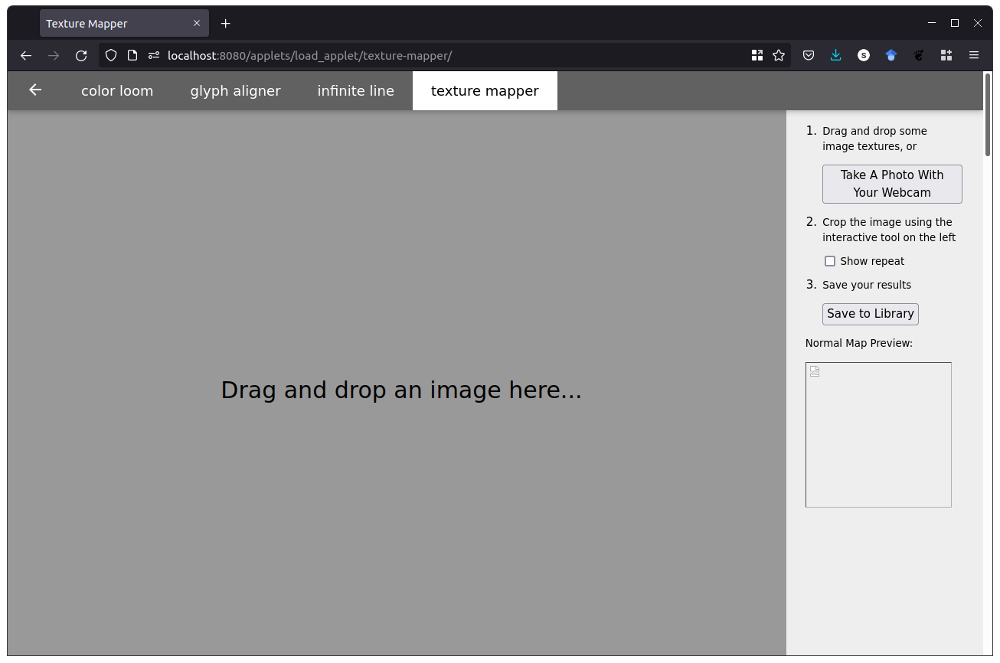Capture an Image
- Take a photo with your webcam, or
- Drag and drop a photo from your computer
Crop image
- Crop image so the focus is where you want it

Upload to library
Click "Save to Library"
- Family (leave unchanged): your internet ID
- Class: name of your gradient
Name it anything you like, we suggest
gradient1...gradientNto correspond with your physical copy - Tag: the percentage through your gradient that you labeled on paper (e.g., 50%)
If you see "successfully uploaded", you're done!
Uploading another texture
Just click "Take a snap with webcam" again!
Viewing your gradients
z.umn.edu/cs5609-library, go to gradient library
You should now be able to:
- Define VisAsset
- Log in to the course VisAsset library
- Upload a gradient using the applets
- View gradients in the library
Part 2: Installing Sculpting Vis Components
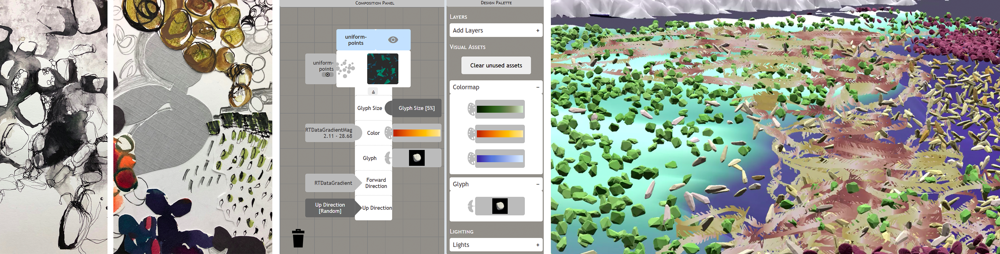After this tutorial, you should be able to:
- Define the components of Sculpting Vis
- Successfully launch each component
- Verify that components are working
Before you start:
Create a folder named "SculptingVis" somewhere you'll remember.
This is where you'll be saving all of the files from this tutorial.
Component overview
Sculpting Vis has two components. Use the following instructions to install each:
Vis Manager
Option 1 (preferred): Docker
If you're comfortable with Python and/or don't want to install Docker,
follow the Python instructions instead.
If you're using a CSE Labs computer or don't want to use Docker on Windows,
use the embedded vis manager instructions.
Hit the down arrow to see install details
Download Docker
Follow the instructions for your operating system (Windows, Mac, or Linux)
Download vis manager installer
- Download the Install-SculptingVis.zip file into your "SculptingVis" folder
- Unzip the file into the "SculptingVis" folder
Your SculptingVis folder should now have these files:
Install Vis Manager (Windows and MacOS)
At the end of this process, verify that you have two
new folders,
"media", and "logs" in the SculptingVis folder.
- Make sure Docker is running (open the Docker Desktop app)
- Double-click the installer file
On Windows, you may need to click "More Info" > "Allow Anyway"
On MacOS, you may need to right click, cmd+click "Open", then click "Open"
- Wait for the vis manager to download and install
this may take a while
Test Vis Manager (Windows and MacOS)
- Open the Docker Desktop app
- Verify that
sculpting-vis-appshows up as a Container - Click the play button on
sculpting-vis-appto start the Vis Manager 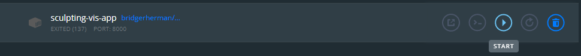 - In a browser, go to http://localhost:8000
You should see the design interface:
Install Vis Manager (Linux)
At the end of this process, verify that you have two
new folders,
"media", and "logs" in the same folder you downloaded the
installer to.
- Open a terminal to your
SculptingVisfolder - Run the installer:
./Install-SculptingVis-Linux.sh - Wait for the vis manager to download and install
this may take a while
Test Vis Manager (Linux)
- In a terminal, run
docker start sculpting-vis-app - In a browser, go to http://localhost:8000
You should see the design interface:
Option 2: Python
This install is advanced and requires command-line usage.
We recommend using the Docker option if you can.
Install Python
The Vis Manager requires Python version 3.8.10.
It may work with 3.9 and 3.10 but hasn't been tested.
Download the code
Clone or download the ABR Server GitHub repository to a memorable place
We suggest a folder named "SculptingVis"
Install requirements
Open a terminal to the abr_server folder, and run:
python3 -m pip install -r requirements.txt
python3 manage.py collectstatic --no-input
python3 manage.py migrate
Test the Vis Manager
In a terminal within your abr_server folder, run:
python3 manage.py runserver
Then, in a browser, go to http://localhost:8000
If you see the design interface, like this, you're done!
Embedded Vis Manager
- Download the embedded Vis Manager and unzip it to your SculptingVis folder
- Double-click the
RunVisManager.batfile
Your SculptingVis folder should look like this now:
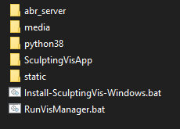Graphics Engine (ABR)
The Artifact-Based Rendering engine uses the Unity Game Engine.
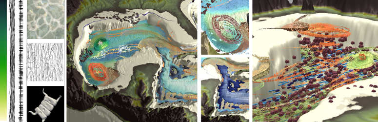Install Unity
- Install Unity Hub
- Then, go to 'Installs' > 'Add' > '2020.3.27f1'
- You can uncheck all of the build support options to save space
Get the code
- Download the support code zip file
- Unzip it in your "SculptingVis" folder
or, clone the git repository to your SculptingVis folder and checkout the csci5609 branch
Open the project from Unity Hub
- Under "Projects", click "Add"
- Select the SculptingVisApp folder you unzipped
it may be named SculptingVisApp-csci5609
- Click on the SculptingVisApp project to open it in Unity
Open the 'Main' Scene
- In the 'Project' tab, click 'Scenes'
- Double-click 'Main'
Make sure the Vis Manager is running
Check out the install instructions for the Vis Manager
In a browser, go to http://localhost:8000
Start Unity
Press the 'Play' button
Check and make sure there are no errors in the console
One about 'unable to parse color' is normal
If you see something like the following, you're done!
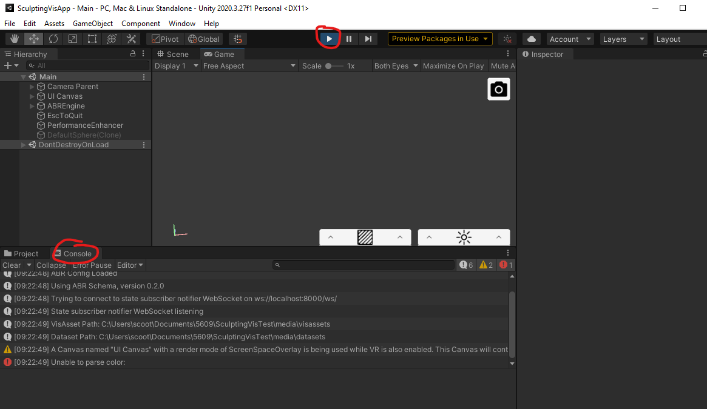You should now be able to:
- Define the components of Sculpting Vis
- Successfully launch each component
- Verify that components are working
Review / Launching Normally
Vis Manager
- Open Docker Desktop
- Click "play" button on
sculpting-vis-app
ABR
- Open Unity Hub
- Click on SculptingVisApp project
- Click "play" button in Unity
Making a Visualization

Overview
Design UI
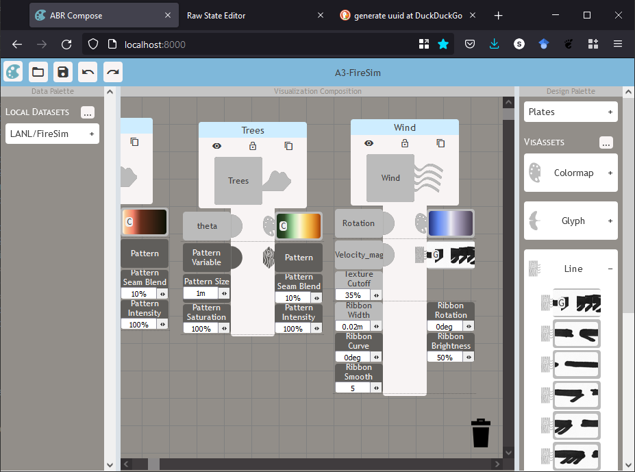ABR (in Unity)
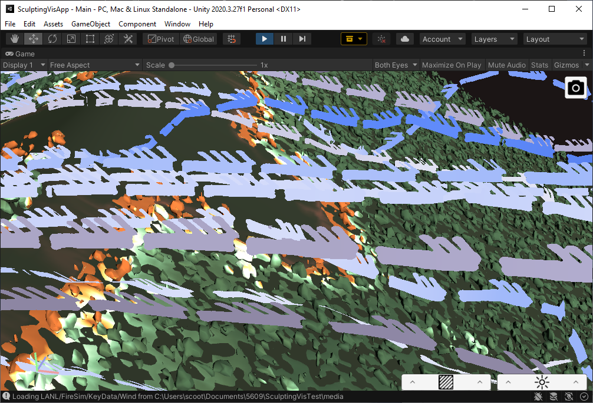Design UI